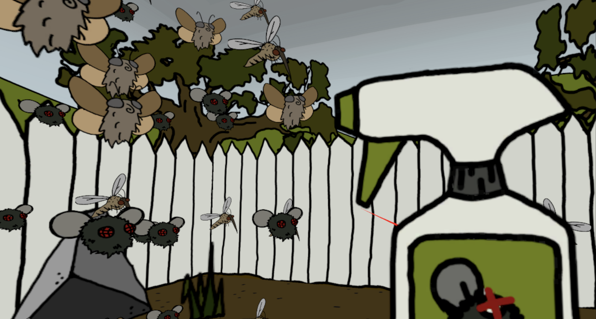
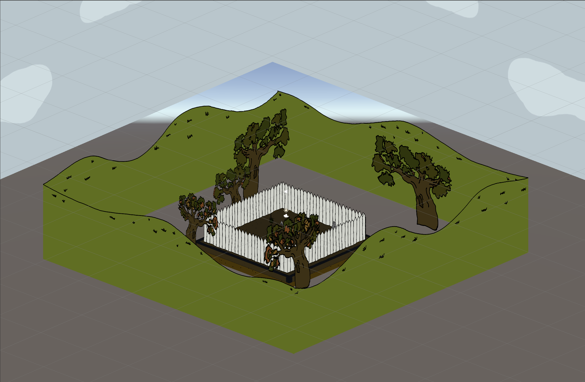

Overview
BOID BUGS VR is an interactive ecosystem simulation built for Meta Quest 3/3S and inspired by the concept of the insect apocalypse. An immersive, VR demonstration of the delicate balance between natural growth and ecological collapse, as determined by insect populations and human interaction. Players can now enter the garden in first-person, surrounded by the damage of pesticides or a bounty of flowers. BOID BUGS VR features a unique 2.5D style, utilizing appealing 2D assets and translating them to a 3D environment by way of a 'billboarding' effect.


Click image to view gallery
Introduction
BOID BUGS VR is an improved 2.5D interactive landscape which utilizes the Boids algorithm to simulate the movement of behavior of insect populations in VR. This project visualizes an ecological system where the player’s interactions influence the health of the environment which surrounds them on all sides.
This concept is rooted in the continued study of the “Insect Apocalypse”, the dramatic decline in insect populations worldwide due to pesticide use and environmental changes. This decline has also resulted in a degradation of ecosystems, proving the essential services insects provide. BOID BUGS VR uses a 3D boids model as a symbolic and visual medium to represent this balance.
When the user points their right Quest Touch controller to the soil beneath them and presses the trigger, they plant flowers which attract new insects. When pointing their controller above the horizon line, a trigger press will spray pesticides to eliminate them. Over time, these actions visibly shape the 2.5D ecosystem, changing not only the number of insects, but also the health of the environment. As the insect population declines, the sky becomes grim and polluted, the leaves of the trees begin to dwindle, and the plants in the garden start to die. If the user plants more flowers, the insect population increases, and the sky becomes clear, the tree is healthy, and a luscious garden fills their view.
This system aims to evoke reflection on the human impact and the interdependence of the environment, noting that every decision has visible consequences. Placing the player directly in this perspective makes their actions all that more personal, choosing a view full of pesticide spray or a beautiful, flower-filled landscape.
Methods
Within Unity’s OpenXR system and using C#, each insect acts as an instance of a Boid prefab controlled by local rules of alignment, cohesion and separation. The environment reacts dynamically to player interactions using several key functions:
- BoidManager.cs controls overall population and environment state
- Boid.cs managers per-agent behavior and physics in 3D space
- Billboard.cs uses LookRotation to make 2D objects always face XR Camera
- VRInteractionTool.cs changes the cursor between pesticide and flower mode
- PesticideZone.cs handles collision-based insect death and despawning
- Flower prefabs spawn new insects (random value from 1-3) when planted
The Boid system used in BOID BUGS VR extends the flocking model into a three-dimensional, cylindrical environment, with additional constraints that shape how insects move, cluster, and respond to the ecosystem. Each parameter contributes to flocking in the cylinder-shaped space:
- neighborRadius — the three-dimensional sensing radius within which a boid detects neighbors; this spherical range drives flock behaviors.
- maxSpeed — sets the maximum horizontal movement speed of each boid, preventing erratic motion while maintaining swarm dynamics.
- alignmentWeight — controls how strongly a boid steers toward the average velocity of nearby boids, encouraging unified directional movement.
- cohesionWeight — determines the force pulling a boid toward the local center of mass, enabling circular swarm formations.
- separationWeight — applies repulsive force when boids are too close, preventing overlap and maintaining spatial density.
Beyond movement, several environmental elements provide feedback to player interaction:
- Sky movement — sky brightness correlates with insect population (darker with fewer insects, clearer with more).
- Tree leaves — reflect ecological health: lush >30 insects, brown between 15–30, and gone <15.
- Flower decay — begins when population <30, progressively replacing flowers with dying variants until they disappear.
The largest constraint when moving the project from 2D to VR was its visual assets: all sprites were originally 2D. To work around this limitation, a simulated 3D environment and billboarding system were introduced.
- 3D Environment: existing 2D sprite assets were arranged to form a four-sided play space around the user. Each side replicates the original BOID BUGS environment with fence lines, trees, hills, and clouds. These elements respond dynamically to insect populations (leaves fall, sky darkens, etc.).
-
Flowers & Bugs: all remain 2D sprite prefabs using
Billboard.csto update their orientation every frame so they always face the XR camera. As the player moves, all sprites rotate to maintain the visual illusion. - Boid System: a standard 3D boid algorithm was unsuitable because it would reveal the 2D nature of the sprites. To preserve the illusion, boids are constrained to a cylindrical “safe zone” with configurable radius and height. Within this zone, they may move freely while flocking around the player and continuously billboarding toward the camera.

Click image to view gallery
Takeaways
BOID BUGS VR required extensive knowledge in XR development and Quest 3 utilization. Both were relatively new to me, making this a valuable opportunity to expand my technical skillset.
One of the most unique challenges involved working with 2D assets inside XR. I wanted to preserve the original BOID BUGS aesthetic while adding spatial depth and immersion. Through research, I discovered the billboarding technique, which enabled this intersection between 2D sprites and 3D XR environments. The result produced a distinctive visual style that I plan to continue using in future projects.
I also developed a stronger understanding of Unity’s OpenXR system. While scene development remains similar to standard 3D workflows, handling input binding and interaction logic introduces an entirely new layer of complexity. After initial difficulties achieving consistent interactions, I explored documentation and learned how to properly bind controller inputs across XR devices.
Overall, this project marked an important step forward in my Unity development practice—branching into XR workflows and broadening the possibilities for future immersive projects.